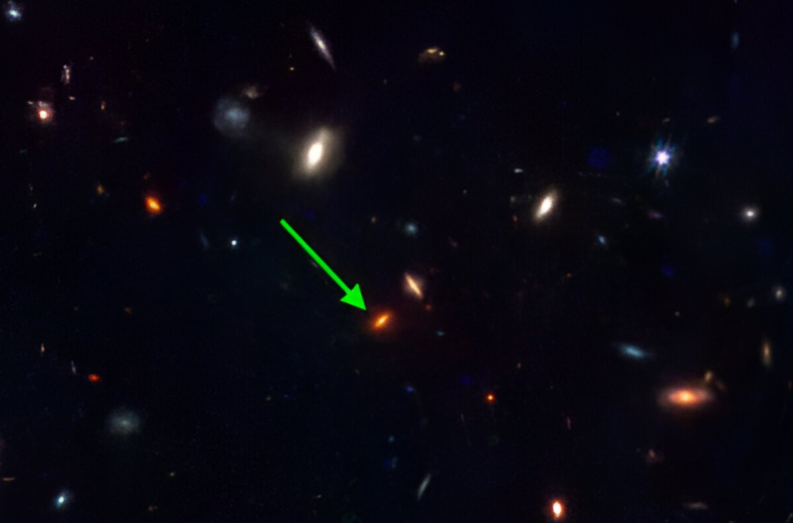
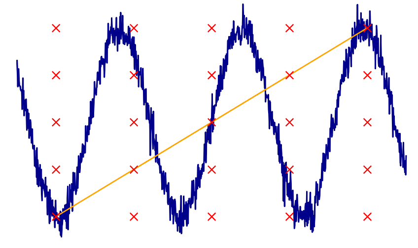

Blog
Stunning JWST Galaxy Poses Questions About Galaxy Formation

After significant spectral analysis, JWST's NIRCAM sighted...
German Club Presidency
I’m pleased to announce that I will once again...
Project: Advancement

I have the honor to collaborate with Professors...